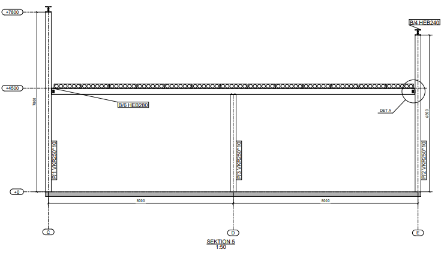
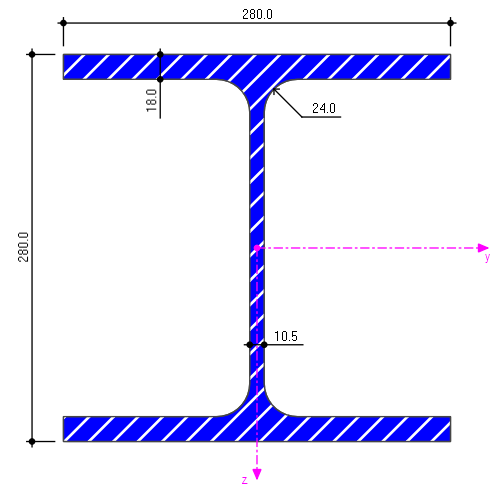
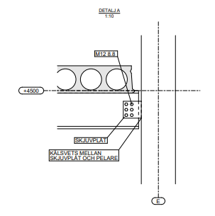

Varmformade konstruktionsrör
- Homogen materialstruktur
- Obetydliga restspänningar
- Inga svetsbegränsningar i hörnen
- Formstabil vid svetsning & varmgalvanisering

Tekla Structures · Konstruktion · Dimensionering
Stålstomme för Industribyggnad.
Bärande stålstomme dimensionerad för 8,0 meters spännvidder — från lastberäkning till färdig konstruktionsritning i Tekla.
HEB 280
Bjälklagsbalken.
Tvärsnittet: 280×280, fläns 18 mm, liv 10,5 mm, hörnradie 24 mm. Dimensionerad mot moment, tvärkraft och nedböjning i bruksgränstillstånd.
Dimensioneringskontroll
MEd ≤ Mpl,Rd
623,2 kNm ≤ 663,9 kNm → OK
VKR 250×10
Varmformat — av en anledning.
Pelaren är ett varmformat konstruktionsrör. Det ger materialegenskaper som kallformade rör inte når upp till.
Detalj A
Förbandet i närbild.
6 st M12 8.8-skruvar, 10 mm skjuvplåt, kälsvets mellan skjuvplåt och pelare. Genomritad i Tekla på samma 1:10-skala som ritningen visar.